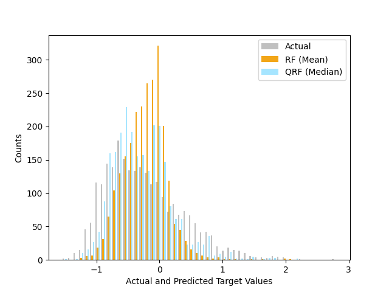

Note
Go to the end to download the full example code
Quantile regression forest vs. standard regression forest
An example comparison between a quantile regression forest and a standard regression forest on a synthetic, right-skewed dataset. In a right-skewed distribution, the mean is to the right of the median.
print(__doc__)
import matplotlib.pyplot as plt
import scipy as sp
from sklearn.ensemble import RandomForestRegressor
from sklearn.model_selection import train_test_split
from sklearn.utils.validation import check_random_state
from quantile_forest import RandomForestQuantileRegressor
rng = check_random_state(0)
# Create right-skewed dataset.
n_samples = 5000
a, loc, scale = 5, -1, 1
skewnorm_rv = sp.stats.skewnorm(a, loc, scale)
skewnorm_rv.random_state = rng
y = skewnorm_rv.rvs(n_samples)
X = rng.randn(n_samples, 2) * y.reshape(-1, 1)
regr_rf = RandomForestRegressor(n_estimators=10, random_state=0)
regr_qrf = RandomForestQuantileRegressor(n_estimators=10, random_state=0)
X_train, X_test, y_train, y_test = train_test_split(X, y, test_size=0.5, random_state=0)
regr_rf.fit(X_train, y_train)
regr_qrf.fit(X_train, y_train)
y_pred_rf = regr_rf.predict(X_test)
y_pred_qrf = regr_qrf.predict(X_test, quantiles=0.5)
colors = ["#c0c0c0", "#f2a619", "#a6e5ff"]
names = ["Actual", "RF (Mean)", "QRF (Median)"]
plt.hist([y_test, y_pred_rf, y_pred_qrf], bins=50, color=colors, label=names)
plt.xlabel("Actual and Predicted Target Values")
plt.ylabel("Counts")
plt.legend()
plt.show()
Total running time of the script: (0 minutes 0.499 seconds)